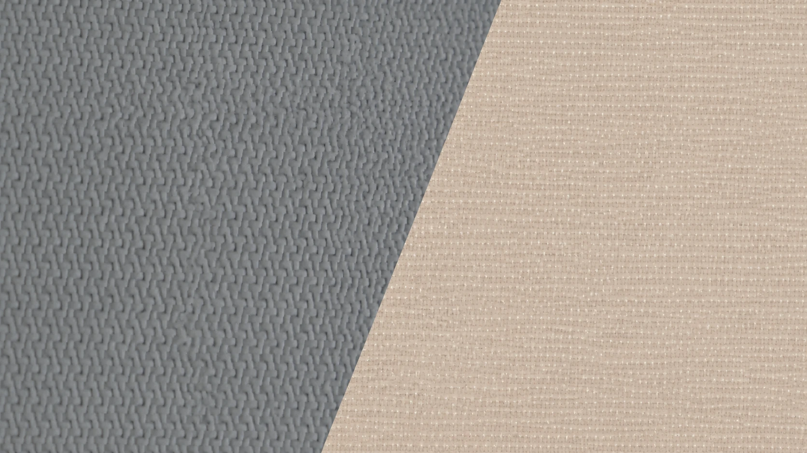

Uneven Surface Finish
Wrinkles or waviness may look more obvious after lamination or installation.

Wrinkles or waviness may look more obvious after lamination or installation.

Uneven coating may cause patchy finishes and opacity variation across the facer.

Poor core hiding may reveal fibers or color differences in the finished panel.

Local gloss variation may cause patchy panel reflections under directional light.

Roll or batch shade differences may stand out in adjacent panels.

Pinholes or microcracks may impair coated/foil facers and raise integrity concerns.

Weave, texture or grain variations may stand out in close-view decorative uses.

Light and environment may change facer color or appearance with age.
01
Problem → Solution1 / 8Wrinkles or waviness may look more obvious after lamination or installation.
Choose flat, even-thickness fiberglass coated veils; check veil structure, coating leveling, drying and lamination tension.
02
Problem → Solution2 / 8Uneven coating may cause patchy finishes and opacity variation across the facer.
Adjust coating viscosity, solids, add-on and drying. Check cross-web coat weight and appearance before converting.
03
Problem → Solution3 / 8Poor core hiding may reveal fibers or color differences in the finished panel.
Review hiding pigments/fillers, coat distribution and fiberglass structure; retain required acoustic-system air permeability.
04
Problem → Solution4 / 8Local gloss variation may cause patchy panel reflections under directional light.
Consider matte/low-gloss finishes; control coating uniformity and microtexture, then assess in end-use lighting.
05
Problem → Solution5 / 8Roll or batch shade differences may stand out in adjacent panels.
Control pigments, coat weight and drying; use approved colors, L*a*b* tests and agreed batch-to-batch ΔE limits.
06
Problem → Solution6 / 8Pinholes or microcracks may impair coated/foil facers and raise integrity concerns.
Check substrate, filtration and roll protection. For foil, consider fiberglass reinforcement if suitable; inspect pinholes and cracks.
07
Problem → Solution7 / 8Weave, texture or grain variations may stand out in close-view decorative uses.
Use consistent weave or coating processes. Control lamination tension to limit pattern distortion or stretching.
08
Problem → Solution8 / 8Light and environment may change facer color or appearance with age.
Assess weather-resistant pigments and UV-resistant coatings; validate with accelerated aging and end-use exposure tests.
Recommended settings and performance targets should be confirmed against the customer’s substrate, production process, and final application.

A decorative facing option for acoustic wall and ceiling systems where the consistency of the woven surface, texture and appearance is important.
Uneven Surface Finish
Inconsistent Coating Distribution
Inconsistent Surface Texture

A white facing solution developed around clean visual coverage and controlled surface appearance, with hiding power considered together with the acoustic system’s airflow requirements.
Poor Core Hiding
Color Inconsistency

A low-gloss black facing option for visually sensitive interiors, including areas with directional lighting where unwanted reflections need to be minimized.
Uneven Light Reflection

Foil-based facers for insulation systems where surface integrity and visible defects such as pinholes and microcracks are key quality checkpoints; fiberglass-reinforced structures may be evaluated.
Surface Defects & Imperfections

A coated fiberglass facing direction for applications where exposure-related discoloration and surface aging must be assessed through relevant testing.
Surface Discoloration & Aging
Final product selection depends on required performance, converting conditions, and sample evaluation.

Consistent coverage and color help deliver a uniform ceiling appearance across large installed areas. Matte options can also support spaces with demanding lighting conditions.

Decorative wall panels are often viewed up close, making weave consistency, controlled surface texture, and even color especially relevant.

Foil facers are evaluated for visible surface defects, reinforcement needs, and production-handling robustness as part of the insulation board manufacturing process.

Where outdoor exposure is expected, facer color and appearance should be assessed alongside UV and weathering resistance under the intended conditions of use.
Share your facer construction, process and appearance target. GRECHO can discuss material options and sample evaluation.
Email: info@grechofiberglass.com
TEL: +86-0771-2567879
WhatsApp: +86-18677188374